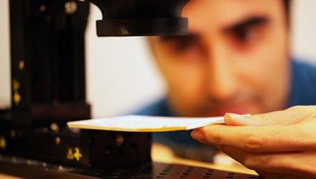

|
|
|
|
|
|
Автор сайта: Климов А.Г. Группа: 1ИВТпб-01-21оп |
Ученые из MIT разработали необычный прибор, позволяющий в буквальном смысле читать закрытые книги, не открывая их, используя терагерцовое излучение, говорится в статье, опубликованной в журнале Nature Communications.

«Музей Нью-Йорка уже проявил интерес к этой технологии, так как они хотят, к примеру, заглянуть внутрь древних книг, к которым они даже не смеют прикасаться. На самом деле, если подумать, у этой технологии масса применений. К примеру, на многих сайтах есть капчи. И наш алгоритм распознавания символов позволяет обойти большинство из них», — заявил Бармак Хешмат (Barmak Heshmat) из Массачусетского технологического института (США).
Хешмат и его коллеги по лаборатории создали эту технологию благодаря так называемому терагерцовому излучению.
Как объясняют ученые, терагерцовое излучение относится к числу самых перспективных направлений исследований в области оптики, микроэлектроники и в других высокотехнологичных сферах. В перспективе, волны такого типа можно приспособить для сверхскоростной передачи информации, наблюдения за работой живых клеток в режиме реального времени и множества других целей.
Одна из таких целей и самое известное свойство этого излучения – теоретическая способность делать наблюдаемые объекты «прозрачными». Ученые из MIT сделали эту мечту реальностью, разработав особый сканер, который умеет отличать чистую бумагу от букв по тому, как меняются свойства пучков терагерцового излучения, отразившихся от их поверхности, и как быстро они возвращаются назад.
В теории, такое устройство позволяет прочитать слова в книге любых размеров и толщины, однако на практике этому мешает фоновый шум, тот факт, что терагерцовые волны могут быть отражены несколькими страницами и прочие помехи. По этой причине ученым пришлось создать специальный алгоритм, анализировавший изображение, и отсеивавший паразитные сигналы и распознававший отдельные буквы.
Благодаря нему сканер Хешмата позволяет прочитать книгу из 20 страниц, или просмотреть первые 20 страниц в более толстых фолиантах. В ближайшее время ученые обещают улучшить работу этой программы и научиться читать более глубокие слои книг.
Подобный сканер, как считают физики, заинтересует в первую очередь археологов, историков и криминалистов, работающих с книгами и другими материалами, к которым нежелательно прикасаться. К примеру, такое устройство можно использовать для чтения древнеегипетских папирусов или свитков из Помпей, которые просто нельзя разворачивать, или древнерусские грамоты, спекшиеся в единое целое.
Кроме того, такие сканеры, благодаря их высокой чувствительности, можно применять для послойного изучения структуры микрочипов, анализа качества изготовления деталей для космических аппаратов и проверки различных многослойных таблеток и прочих медицинских препаратов.
| © Климов А.Г. | Карта сайта |